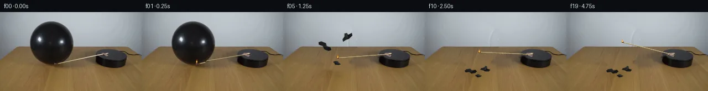

![首帧]()

Round 00
2026-11-05T11:48:25.014405+00:00像素候选变化代码 +230/−0inspection 更新
pixels bf45ca01da82bb7f · code ff236463098c4549
查看本轮 generate.py 真实 diff
--- previous/generate.py
+++ current/generate.py
@@ -0,0 +1,230 @@
+"""Local source-pixel continuation; no external model or renderer."""
+from pathlib import Path
+import math
+import numpy as np
+import cv2
+from PIL import Image, ImageDraw, ImageFilter
+from scipy.ndimage import gaussian_filter
+from artifact_io import save
+
+ROOT=Path(__file__).resolve().parent
+SRC=np.array(Image.open(ROOT/'first_frame.png').convert('RGB'))
+H,W=SRC.shape[:2]
+Y,X=np.mgrid[:H,:W]
+S=4
+rng=np.random.default_rng(113)
+
+# Recover the balloon's silhouette solely from the supplied source image.
+roi=np.zeros((H,W),np.uint8)
+roi[13:100,50:138]=255
+low=(SRC.mean(2)<79).astype(np.uint8)*roi
+contours,_=cv2.findContours(low,cv2.RETR_EXTERNAL,cv2.CHAIN_APPROX_SIMPLE)
+bmask=np.zeros((H,W),np.uint8)
+cv2.drawContours(bmask,[max(contours,key=cv2.contourArea)],-1,255,-1)
+bmask=cv2.morphologyEx(bmask,cv2.MORPH_CLOSE,np.ones((3,3),np.uint8))
+
+# Remove only the old shaft so later rotations cannot leave a trailing copy.
+stick_mask=np.zeros((H,W),np.uint8)
+cv2.line(stick_mask,(101,94),(195,76),255,3,cv2.LINE_AA)
+cv2.circle(stick_mask,(100,94),3,255,-1)
+stick_mask[bmask>0]=0
+# Leave the little pink attachment alone.
+stick_mask[75:82,184:197]=0
+intact=cv2.inpaint(SRC,stick_mask,3,cv2.INPAINT_TELEA)
+
+# The exposed wall is an analytically fitted smooth gradient. Fit only visible wall.
+def basis(x,y):
+ x=(x-128)/128; y=(y-72)/72
+ return np.stack([np.ones_like(x),x,y,x*x,x*y,y*y,x*x*x,x*x*y,x*y*y,y*y*y],axis=-1)
+A=basis(X.astype(float),Y.astype(float))
+wall_valid=(Y<61)&(bmask==0)&(X>3)&(X<252)
+wall_valid &= cv2.dilate(bmask,np.ones((11,11),np.uint8))==0
+coef=np.linalg.lstsq(A[wall_valid],SRC[wall_valid].astype(float),rcond=None)[0]
+wall=A@coef
+# Very faint sensor texture obtained from source residuals.
+resid=SRC.astype(float)-gaussian_filter(SRC.astype(float),sigma=(2,2,0))
+wall+=np.roll(resid,63,axis=1)*.28
+
+# The wood grain is copied from exposed lower table, mapped upward in perspective.
+# Its low-frequency illumination is fitted to visible table pixels; the clone
+# supplies the fine grain, rather than a synthetic flat-colored replacement.
+table_valid=(Y>=65)&(Y<144)
+table_valid &= ~((X>48)&(X<146)&(Y<113))
+table_valid &= ~((X>151)&(Y<110))
+table_valid &= ~((X<32)&(Y<87))
+table_valid &= (stick_mask==0)
+# Second-degree lighting model avoids extrapolation oscillations.
+coef_t=np.linalg.lstsq(A[table_valid,:6],SRC[table_valid].astype(float),rcond=None)[0]
+table_base=A[:,:,:6]@coef_t
+sx=(X.astype(np.float32)-94)*1.10+90+(Y-91)*.22
+sy=112+(Y.astype(np.float32)-63)*.59
+sample=cv2.remap(SRC,sx.astype(np.float32),sy.astype(np.float32),cv2.INTER_CUBIC,borderMode=cv2.BORDER_REFLECT_101).astype(float)
+sample_low=gaussian_filter(sample,sigma=(3.5,3.5,0))
+table=table_base+(sample-sample_low)*.90
+# A subtle broad grain variation from the sample keeps the restored region natural.
+table+=(sample_low-gaussian_filter(sample_low,sigma=(12,12,0)))*.45
+reconstructed=np.where((Y<63)[...,None],wall,table)
+# Fill the silhouette plus its contact shadow, and feather into real source pixels.
+remove=cv2.dilate(bmask,np.ones((5,5),np.uint8)).astype(float)/255
+shadow=np.exp(-(((X-99)/35)**2+((Y-99)/8)**2)*2)
+shadow[(Y<87)|(X>149)]=0
+remove=np.maximum(remove,np.clip(shadow*2.6,0,1))
+remove=gaussian_filter(remove,.8)
+clean=intact.astype(float)*(1-remove[...,None])+reconstructed*remove[...,None]
+clean=np.clip(clean,0,255).astype(np.uint8)
+Image.fromarray(clean).save(ROOT/'.tmp/clean_plate.png')
+Image.fromarray(bmask).save(ROOT/'.tmp/balloon_mask.png')
+
+# Supersampled analytic geometry and compositing.
+def layer(): return Image.new('RGBA',(W*S,H*S),(0,0,0,0))
+def poly(draw,pts,fill): draw.polygon([(round(x*S),round(y*S)) for x,y in pts],fill=fill)
+def line(draw,pts,fill,width): draw.line([(round(x*S),round(y*S)) for x,y in pts],fill=fill,width=max(1,round(width*S)),joint='curve')
+def composite(arr,im):
+ im=im.resize((W,H),Image.Resampling.LANCZOS)
+ rgba=np.asarray(im).astype(float)/255
+ a=rgba[:,:,3:4]
+ return np.clip(arr*(1-a)+rgba[:,:,:3]*255*a,0,255)
+
… diff truncated; 143 more lines …